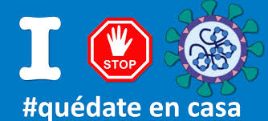

MOVIMIENTO SCOUT
Web de Paula Conde
INICIO
QUE ES
FUNDADOR
LEY Y PROMESA
ETAPAS
ACTIVIDADES
ENLACES
 EL MOVIMIENTO SCOUT...
EL MOVIMIENTO SCOUT...
El escultismo (del inglés scouting, que significa explorar) es un movimiento infantil y juvenil que busca educar a niños y jóvenes, con base en valores y juego al aire libre como método de enseñanza no formal, que actualmente está presente en 165 países y territorios, con aproximadamente 40.000.000 de miembros en todo el mundo, agrupados en distintas organizaciones.
El Movimiento Scout nació como una manera de combatir la delincuencia en la Inglaterra de principios del siglo xx, buscando el desarrollo físico, espiritual y mental de los jóvenes para que llegaran a ser «buenos ciudadanos» a través de un método específico inspirado en la vida militar y al aire libre cuyas directrices serían establecidas en el manual Escultismo para muchachos (1908), del General británico Robert Stephenson Smith Baden-Powell of Gilwell, que en 1909 fue nombrado caballero y recibió el título de sir, pasando a ser en 1929 lord Baden-Powell, I barón de Gilwell.
En 1907 se realizó el primer campamento experimental en la isla de Brownsea, Bahía de Poole, Dorset, en la costa sur de Inglaterra, en el que participaron 20 muchachos separados en 4 patrullas; «Lobos», «Toros», «Chorlitos» y «Cuervos»; hijos de conocidos militares que hicieron campaña, en África o Asia, con Baden-Powell y de obreros de Londres. Como consecuencia del éxito del nuevo sistema, Baden-Powell escribió un libro donde recopilaba experiencias y anécdotas relacionadas con esta práctica, lo que terminó siendo el ya mencionado Escultismo para muchachos.
Posteriormente, el escultismo fue perfeccionado por Vera Barclay y Roland Phillips, entre otros.
El Movimiento Scout pone énfasis en las actividades lúdicas con objetivos educativos, en las actividades al aire libre y en el servicio comunitario, estas últimas con el objeto de formar el carácter y enseñar de forma práctica valores humanos, al contrario de la formación académica teórica, por eso el énfasis recae en el ejemplo del monitor. Toma como base de su sistema educativo el «lobatismo» en el caso de los niños entre 8 y 11 años —ambiente de familia feliz— y el sistema de patrullas —pequeños grupos de amigos, basado en el concepto de pandilla—. A su vez, dependiendo del grupo scout y la asociación correspondiente a cada país, existen unidades mayores de jóvenes Caminantes o Rovers, así como niños más pequeños como Castores, en edades comprendidas entre 6 y 8 años.
Denominación
En castellano, se utiliza, según el país, la acepción «scout» o «explorador», de las cuales deriva «Scoutismo» o «Escultismo» —scouting, en inglés—. Esta palabra fue usada por primera vez en The New Buffalo Bill Library (1899). Era una serie de publicaciones basada en la vida de William Cody, Buffalo Bill. En febrero de 1900, mientras continuaba la Segunda Guerra Bóer con los colonos holandeses sudafricanos, fue publicada en Sudáfrica una serie con historias de aventuras, El Boy Scout, realizadas por un personaje de ficción, Harry Saint George. La serie duró hasta 1906, un año antes del campamento experimental de Robert Baden-Powell en la Isla de Brownsea. Cada título de la serie comenzaba con las palabras The boy scout. El número de diciembre de 1900 es particularmente curioso ya que convierte a Harry, el boy scout, en policía de Baden-Powell en África del Sur (The boy scout joins B-P police). El mismo Baden-Powell había usado la palabra scout en 1897, cuando instruyó a sus soldados en prácticas de reconocimiento y exploración en su libro Aids to scouting. Dice William Hillcourt: «Cuando la enseñanza llegó a su fin, BP quiso que sus alumnos “hicieran un trabajo práctico por medio de ejercicios variados de exploración, sobre diversos terrenos, en parejas e individualmente”. Los hombres que pasaban satisfactoriamente las pruebas que había establecido eran distinguidos con el nombre de scouts y se les daba una insignia especial para la manga de su uniforme: una flor de lis, basada en el diseño utilizado para indicar el norte en los mapas y en las brújulas». De ese origen deriva el nombre de scout usado para este movimiento juvenil a partir de 1907. El movimiento comenzó siendo sólo masculino (Boy Scouts), pero ya hacia 1909 empezó a cobrar importancia la participación femenina. Tiempo después surgieron las guías —Girl Guides— que quedaron bajo la supervisión de la hermana de Baden-Powell, Agnes Baden-Powell, y posteriormente de la esposa de éste, Olave Saint Claire Soames. Hoy en día, los scouts son generalmente mixtos en casi todos los países; por su parte, las guías mantienen su predominancia femenina, aunque han incorporado ya un pequeño porcentaje de varones.Pluriconfesionalidad
Cada país tiene una o varias organizaciones que, respetando las reglas generales del escultismo vigentes internacionalmente, desarrollan sus propias bases y directrices. Así, por ejemplo, existen en numerosos países organizaciones de escultismo: ya sean: católicas, protestantes, ortodoxas, anglicanas, musulmanes, judías, budistas, etc. Así mismo, existen países cuyas organizaciones scouts sin definirse expresamente, promueven entre sus miembros el crecimiento espiritual y el cumplimiento de los deberes de sus miembros para con sus respectivas confesiones; para lo cual la organización entra en contacto directo con representantes de diferentes religiones en su país. En varios países existen instituciones paralelas al escultismo como los sionistas Hashomer Hatzair o los Eclaireurs de France (reconocidos por la OMMS) que tiene como uno de sus principios fundamentales la laicidad. En teoría, como lo pensó el fundador, no se permiten dirigentes ateos o agnósticos, ya que ellos están encargados de guiar espiritualmente a los scouts; aunque hoy en día, con la evolución del movimiento, existen asociaciones cuya propuesta es la educación en la espiritualidad, sin que obligatoriamente tenga que haber un dios de por medio.Metodología
El Método Scout es el sistema de auto educación progresiva, complementario de la familia y de la escuela, que se desarrolla a partir de la interacción de varios elementos, entre los cuales se destacan:- La educación en valores expresados en una promesa y una ley a los que se adhiere voluntariamente;
- La educación activa a través del aprender haciendo, el aprender jugando y el aprendizaje por medio del servicio;
- La pertenencia a pequeños grupos (por ejemplo: la patrulla o el equipo), que con la asistencia y acompañamiento responsable de adultos, incluyen el descubrimiento y la aceptación progresivos de responsabilidades, la capacitación hacia el gobierno autónomo tendientes al desarrollo del carácter, la adquisición de habilidades y competencias, la independencia y confianza en sí mismo, el sentido de servicio y, la aptitud de cooperar y conducir;
- Programas progresivos, atrayentes y estimulantes basados en los intereses de los participantes compuestos por un marco simbólico sugerente y un sistema progresivo de objetivos y actividades educativas variadas, incluyendo juegos, habilidades útiles y servicios a la comunidad, que ocurren en gran parte al aire libre en contacto con la naturaleza;
- La participación emotiva y no interferente del adulto que ayuda a coordinar las actividades que deciden llevar a cabo los muchachos.
Propuesta educativa
Filosofía
En actividades periódicas los scouts son educados, además, sobre todo aquello que constituye la filosofía del movimiento, que propone educar personas libres, responsables, abiertas, solidarias y comprometidas en orden a la búsqueda del bien común con base en la verdad, además el scout debe ser puro en pensamiento palabra y obra.Proyecto Educativo
El Proyecto educativo expresa el ideal de persona al cual aspira el proceso formativo del Movimiento Scout. Una Persona...- Comprometida con su escala de valores dando testimonio, en su estilo de vida de su Promesa y Ley.
- Comprometida con su propia fe y respetuosa de los demás credos.
- Libre y responsable, capaz de tomar decisiones éticas.
- Con capacidad de reflexión, de interioridad, de cuestionamiento.
- Capaz de mantener una relación responsable con la naturaleza y disfrutar con ella.
- Consciente y partícipe de su cultura.
- Identificada con las raíces de su comunidad.
- Que conozca y defina los derechos humanos como expresión de la dignidad de la persona.
- Capaz de ver más allá de sus intereses particulares, y de cooperar solidariamente para el bien común.
- Poseedora de una estabilidad emocional que le permita afectarse en relaciones significativas.
- Con una actitud positiva que le permita trabajar con felicidad por su propio progreso y el de los demás.
- Consciente de su vocación.
- Capaz de reconocer y utilizar sus capacidades para alcanzar las metas que se plantea.
- Sensible y valorizadora de lo estético.
- Capaz de tolerar sus propias frustraciones.
- Que posea un sano sentido del humor.
- Consciente de la importancia de su cuerpo y capaz de utilizarlo como medio para relacionarse con las personas, las cosas y la naturaleza.
- Con un criterio realista que le permita mantener autonomía de pensamiento.
- Capaz de formular juicios y de hallar respuestas válidas, sin dejar de reconocer sus propias limitaciones, al menos por el momento.
- Deseosa de crecer y hacerse “más y mejor”, capaz de animar el cambio.
- Defensora de la vida, la paz, la justicia y la libertad.
Esta web es un trabajo de clase de TIC de Paula Conde Chaves
Blog de la Asignatura TIC: Pulsa aquí
Colegio Moliere (Huelva)
